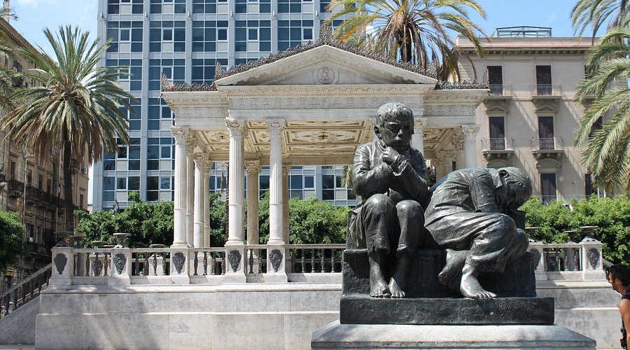

Piazza Pretoria – Palermo

Un gioiello del Rinascimento
Piazza Pretoria, situata nel cuore del centro storico di Palermo, è dominata dalla monumentale Fontana Pretoria, capolavoro scultoreo del Cinquecento che caratterizza in modo inconfondibile lo spazio urbano circostante.
Storia della fontana
La fontana, progettata nel 1554 da Francesco Camilliani per una villa fiorentina, fu acquistata dal Senato palermitano nel 1573 e trasportata in Sicilia. Il suo assemblaggio nella piazza richiese importanti modifiche al tessuto urbano circostante, determinando la configurazione attuale dello spazio.
Architettura e contesto
La piazza è circondata da edifici di grande rilevanza storica: il Palazzo Pretorio (sede del Municipio), la Chiesa di Santa Caterina con il suo chiostro seicentesco, e altri palazzi nobiliari che creano una quinta scenografica di grande suggestione.
Caratteristiche distintive
- Fontana Pretoria con oltre 600 metri quadri di superficie
- 48 statue in marmo di Carrara raffiguranti divinità, animali e figure mitologiche
- Sistema di vasche concentriche su più livelli
- Palazzo Pretorio affacciato sulla piazza
- Chiesa di Santa Caterina con vista privilegiata sulla fontana
- Illuminazione notturna che valorizza le sculture
Significato culturale
Piazza Pretoria rappresenta un punto di convergenza tra diverse epoche storiche e stili architettonici, testimoniando la stratificazione culturale che caratterizza Palermo. Lo spazio continua a essere un luogo di grande fascino per residenti e visitatori.